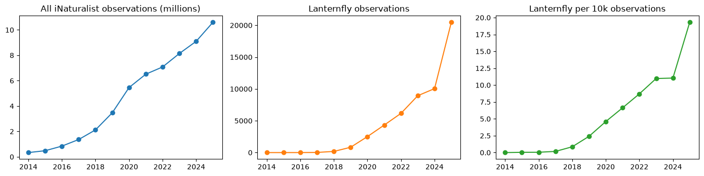
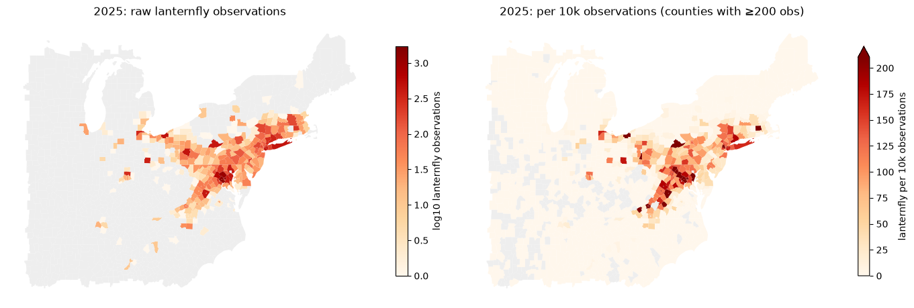
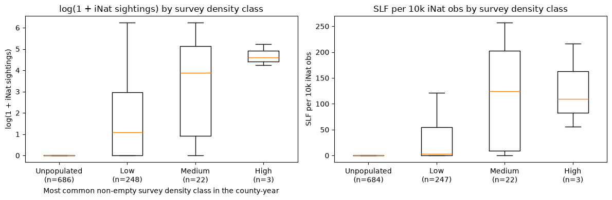
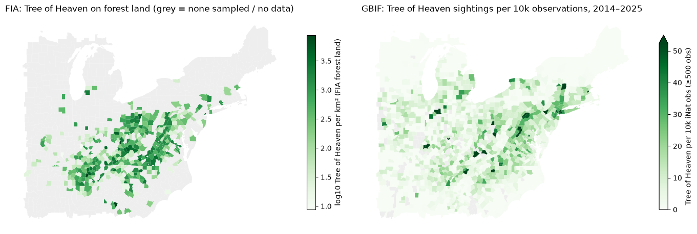
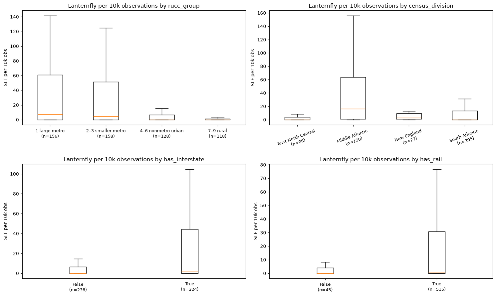
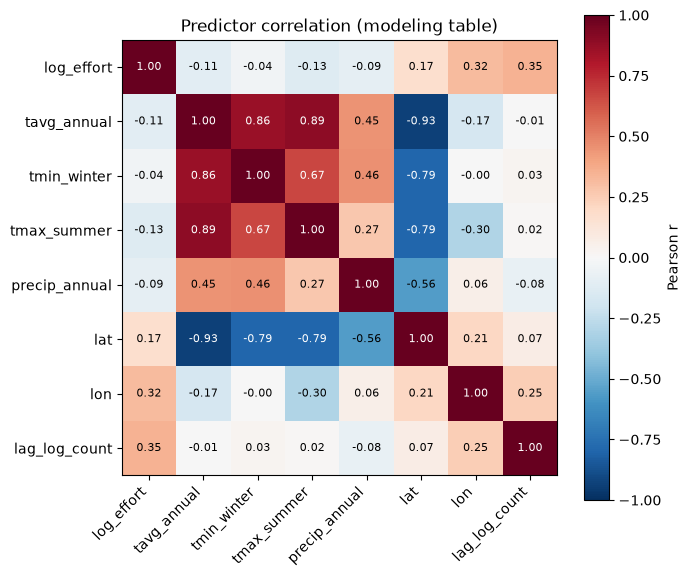
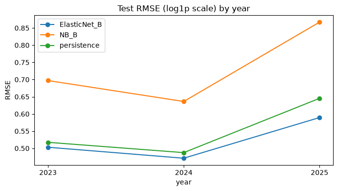

DS 6021 · Final project · LanFly
Where the project stands: data, key terms, notebook structure, EDA findings and the first two models
Status as of November 17, 2026 · Week 13 of 15
The question
The target is a population number for each county in each year, not a yes/no. Two kinds of factors drive it:
Habitat suitability: winter temperatures for egg survival, summer heat, rainfall, and host plants such as Tree of Heaven
Introduction pressure: egg masses hitch rides on vehicles, rail cars and nursery stock, so roads, rail and distance to infestations matter
Key terms · data
| Term | What it means here |
|---|---|
| County-year | One row of data: one county in one calendar year |
| FIPS code | The 5-digit Census ID for a county, e.g. 42011 = Berks County, PA |
| Research grade | An iNaturalist sighting with a photo, date, location and agreed ID |
| Observer effort | How many people are looking: all iNaturalist observations of any species |
| Presence-only | Records say where it was seen, never where it was confirmed absent |
| Survey data | Field crews visit sites and record both presence and absence |
| GBIF | Global biodiversity database that mirrors openly licensed iNaturalist data |
| Categorical | A feature with labels, not numbers, e.g. Metro vs. Nonmetro |
Key terms · statistics
| Term | What it means here |
|---|---|
| log1p | log(1 + x): tames skewed counts and keeps zero counts at zero |
| Spearman ρ | Rank correlation, −1 to 1: do two measures order counties the same way? |
| R² | Share of the variation in the response that a model explains |
| Multicollinearity | Predictors that move together, e.g. latitude and temperature |
| Regularization | Ridge, Lasso, Elastic Net: shrink coefficients to reduce overfitting |
| Temporal holdout | Train on earlier years, test on later ones, as real forecasts would |
| Persistence | Baseline that predicts “same as last year” |
| Kruskal-Wallis | Rank-based test: do several groups’ values differ? |
Key terms · modeling
| Term | What it means here |
|---|---|
| Modeling table | One shared table every model trains and tests on |
| Experiment log | One CSV row per model run: features, years, test scores |
| Feature set | A named group of predictors, e.g. A, B or C |
| Overdispersion | Counts vary far more than their average implies |
| Negative binomial | Count model that allows overdispersion via a parameter α |
| AIC | Fit score that penalizes complexity; lower is better |
| IRR | Incidence rate ratio: how many times expected sightings change |
| Distribution shift | Test years look different from training years |
How the data flows
iNaturalist · sightings
GBIF · effort, Tree of Heaven
NOAA · climate
Census · counties, roads, rail
lydemapr · field surveys
USFS FIA · host trees
USDA ERS · urban/rural
EPA · ecoregions
src/
data_sources.py
Downloads, caches, joins to county
data/
processed/
6 clean tables, in git
src/
modeling.py
Modeling table, split, metrics
Model notebooks
03, 04, …
experiment log
one row per run
Notebook structure
01
Data loading
Sightings, climate, counties
02
EDA
Observer effort
02b
vs. field surveys
02c
Host plants
02d · new
County features
Shared table · new
src/modeling.py
03
Regularized regression
04 · new
Negative binomial
Every notebook starts with an AI-generated-code note and ends with a Team interpretation cell for us to write.
Supporting docs: README (roadmap), docs/todo.md (tracker), docs/ai_usage.md (AI log), experiments/experiment_log.csv
Notebook 01 · Data loading
98,859
research-grade lanternfly sightings, 2013–2026
99%
of sightings fall inside a US county
3,107
counties with monthly climate, 2010–2026
| Problem found | Fix |
|---|---|
| Download stopped silently at 23,800 | Saves each page and resumes; retries on errors |
| NOAA missing value is −99.90 | Docs said −99.99; treat anything below −99 °F as missing |
| Connecticut county codes mismatched | Use 2020 Census boundaries, before CT’s change |
| DC and Lexington, VA: no climate | Dropped from the modeling table (15 rows) |
Notebook 02 · Observer effort

2016 → 2025: all iNaturalist activity ×13, lanternfly sightings ×5,000
Within counties: log-log slope 0.51 (r = 0.39), so sightings rise with effort, but less than one-for-one
Notebook 02 · Counts vs. rates

Raw counts (left): Fairfax, Montgomery MD, DC, Manhattan, Brooklyn
Per 10k observations (right): Roanoke, Staunton, Jefferson WV
Notebook 02b · iNaturalist vs. field surveys
ρ ≈ 0.69
rank agreement with survey density
75%
of established county-years seen on iNat
0.15 → 0.45
R² once survey density is added to effort

Notebook 02c · Host plants

Correlation with lanternfly rate (Spearman ρ):
GBIF Tree of Heaven 0.53
FIA Tree of Heaven 0.21
Black walnut 0.16
Willow −0.20
Notebook 02d · County features · new

| Feature | Levels |
|---|---|
| Census division | 9 |
| Rural-urban code | 9 · Metro/Non |
| EPA ecoregion | 85 · L1: 10 |
| Has interstate | yes/no |
| Has rail | yes/no |
Clear differences by urban/rural, division and interstate (p < 0.0001)
Rail density: ρ 0.40 with lanternfly rate, only 0.26 with effort
Shared modeling setup · new
| County | Year | Split | Sightings | Effort | Last year | Avg °F | Metro | I-way |
|---|---|---|---|---|---|---|---|---|
| Berks, PA | 2019 | train | 40 | 1,527 | 54 | 53.1 | Metro | yes |
| Berks, PA | 2020 | train | 70 | 4,642 | 40 | 54.4 | Metro | yes |
| Berks, PA | 2023 | test | 59 | 6,807 | 44 | 54.1 | Metro | yes |
| Frederick, VA | 2024 | test | 33 | 1,203 | 23 | 55.3 | Metro | yes |
| Grant, WV | 2024 | test | 0 | 808 | 0 | 53.8 | Nonmetro | no |
8,790 county-years
Train 2015–22 (5,309) · test 2023–25 (3,481)
Feature sets A · B · C
7 · 8 · 21 predictors; C adds hosts and county features
experiment_log.csv
7 runs logged; reruns replace, not duplicate
Notebook 03 · Model 1

Response: log1p(lanternfly count), effort as a predictor
Models: Ridge, Lasso, Elastic Net on feature sets A and B
Why regularize: climate predictors are highly correlated (left)
| Test years | RMSE | MAE |
|---|---|---|
| Elastic Net (B) | 0.525 · best | 0.251 |
| Persistence | 0.556 | 0.214 · best |
Set A chose no penalty, so it’s effectively plain least squares. 88% of county-years are zero.
Notebook 04 · Model 2 · new
Models the count directly, but assumes variance = mean
Same mean, but variance = mean + α·mean², so counts can spread out
| Feature set | Poisson dispersion | NB α | AIC Poisson | AIC NB |
|---|---|---|---|---|
| A | 43.7 | 22.2 | 53,105 | 4,349 |
| B | 9.3 | 10.0 | 21,262 | 4,024 |
| C | 5.2 | 5.1 | 15,372 | 3,673 |
Dispersion should be near 1 if Poisson were adequate. It’s 5 to 44, so Poisson is ruled out.
Notebook 04 · Results
| Model (test 2023–25) | RMSE | MAE | R² |
|---|---|---|---|
| Elastic Net (B) | 0.525 | 0.251 | 0.835 |
| Persistence | 0.556 | 0.214 | 0.814 |
| Negative binomial (B) | 0.742 | 0.312 | 0.669 |
| Negative binomial (C) | 0.774 | 0.307 | 0.640 |
| Effort only | 1.242 | 0.639 | 0.073 |
| Negative binomial (A) | 1.254 | 0.532 | 0.054 |
| Training mean | 1.351 | 0.643 | −0.096 |

The ranking holds in every test year; all models do worst in 2025.
Notebook 04 · Diagnosis
Mean lanternfly sightings per county-year · train vs. test
1.1
2.6
4.1
5.7
8.0
8.5
16.2
’15
’16
’17
’18
’19
’20
’21
’22
’23
’24
’25
94% → 79%
zero county-years, train vs. test
3.5 million
largest predicted mean, vs. a real max of 1,723
91% vs. 79%
test zeros predicted vs. observed
Where we stand
Next steps
Week 13 · now
Spread features; start the app skeleton
App behind schedule
Week 14 · Thanksgiving
Tree model; PCA / clustering; pick the best model
Week 15
Deploy app, conclusions, slides; submit 12/6, present 12/7
Modeling: 50 of 130 points
2 approaches done and tracked; PCA or clustering still required
App + presentation: 20 points
Must be deployed publicly; demo it in the talk